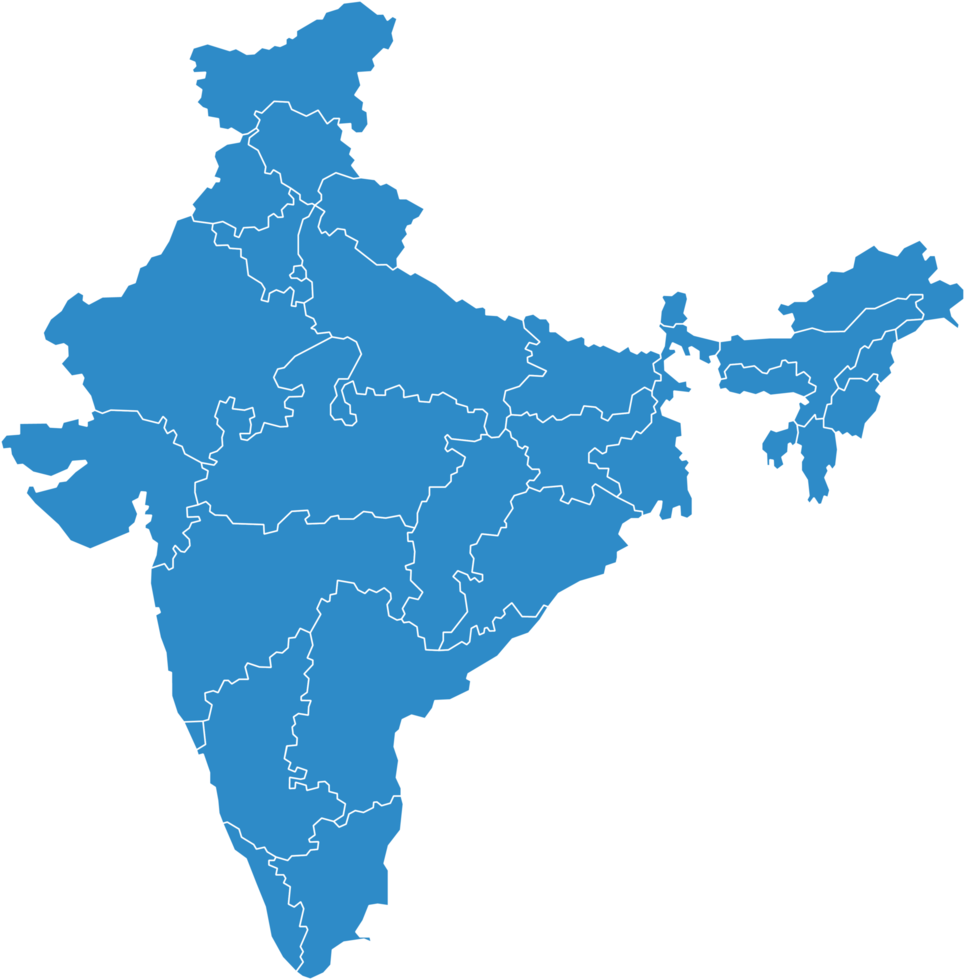

Experience: 9 years in MCS field service at Nordson. Expert in commissioning, support, and customer relationship management, with presence in tier 2 and tier 3 industrial towns.
Strengths: Rapid on-site response, excellent rapport with factory technicians and plant heads, ability to open doors for cross-division opportunities.
Vinay has cultivated loyal relationships with more than 50 customers through consistent service quality and availability. He has a strong presence in northern and central India, especially in UP, MP, and Haryana.
Hotspots show Vinay’s customer influence in North and Central India:
"Vinay is like our internal team. He knows our machines better than we do." – Production Manager, Jain InfraTech
"He introduced us to another Nordson division when we didn’t even know we needed it." – Plant Head, Vaibhav Steel Tubes
"Reliable, responsive, and resourceful — Vinay is a key partner in our production success." – Maintenance Supervisor, Kuber Plastics